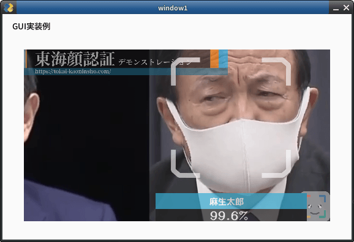
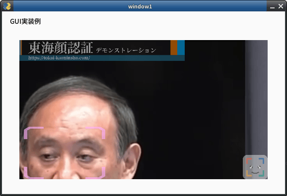

About config.ini file.
config.ini file is FACE01 configure file.
‘config.ini’ is the configuration file of FACE01 using Python ConfigParser module.
The [DEFAULT] section specifies standard default values, and this setting is example.
Note (Important!)
Before to modify config.ini, you should be familiar with the ConfigParser module.
To refer ConfigParser module, see bellow.
https://docs.python.org/3/library/configparser.html
Inheritance
Each section inherits from the [DEFAULT] section.
Therefore, specify only items (key & value) that override [DEFAULT] in each section.
Format
Format is key = value.
Edit
If you use docker Image, you can edit to modify the config.ini with vim.
# Example
$ vim ./config.ini
ℹ️: Note
npKnown.npzがフォルダーに存在するとき、そのファイルが従来のdlibモデル(dlib_face_recognition_resnet_model_v1.dat)で作成されたものなのか、新しいモデル(efficientnetv2_arcface.onnx)で作成されたものなのかは重要な要素です。
もしconfig.iniで指定した学習モデルとnpKnown.npzが作られた学習モデルが一致しない場合、エラーが発生します。
その場合はnpKnown.npzを手動で削除してください。新しいnpKnown.npzが自動的に作成されます。
When npKnown.npz exists in the folder, which is it created by the old dlib model (dlib_face_recognition_resnet_model_v1.dat) or by the new model (efficientnetv2_arcface.onnx) is an important factor.
If the deep learning model specified in config.ini does not match one for which npKnown.npz was created, an error will occur.
In that case, manually delete npKnown.npz. A new npKnown.npz will be created automatically.
Example and explain each items.
[DEFAULT]
[DEFAULT] section is for simple example.
This [DEFAULT] setting for only use CUI mode.
Also, this setting is for user who’s PC is *not* installed Nvidia GPU card or IOT devices.
[DEFAULT] section is the inheritor of all sections.
Items
headless
headlessmeans ‘works CUI mode’. If you want to display GUI window, turn on value to False but process speed get slowly.Type: bool
Default: True
deep+learning_model
従来のdlibモデル(
dlib_face_recognition_resnet_model_v1.dat)と日本人の顔認証に特化したモデル(efficientnetv2_arcface.onnx)を切り替えることが出来ます。int: 0 or 1
dlib_face_recognition_resnet_model_v1.dat: 0efficientnetv2_arcface.onnx: 1
NOTE
各モデルが生成する
npKnown.npzは互いに互換性がありません。よって、deep_learning_modelを変更した場合、既に作成されているnpKnown.npzは手動で削除する必要があります。モデル切り替え後のnpKnown.npzは新たに自動的に作成されます。
anti_spoof
Experimental
Anti-spoof model is included with this sample, but please do not use this model as is for commercial use. Please contact tokai-kaoninsho for details.
Type: bool
Default: False
output_debug_log = False
When True, will output debug log.
Type: bool
Default: False
log_level
If you want to output debug log and message, modify this value to
debug.Type: str
Default: info
set_width
Specify width of GUI window.
Type: int
Default: 750
similar_percentage
Number of % which determine if the person on the screen is the person in the registered face information.
Type: float
Default: 99.1
jitters
Number of value what means calculate jitters on running FACE01.
Type: int
Default: 0
priset_face_images_jitters
Number of value what means calculate jitters for priset_face_images.
Type: int
Default: 100
upsampling
Specifying the detected face area. ex. 0: 80x80px, 1: 40x40px
Type: int
Default: 0
mode
cnnmode is use model what made from AI model. If you don’t use CUDA, sethog.Type: Type: str
Default: hog
frame_skip
Specify the number to
drop frame. Do not make it less than 2 if use HLS.Type: int
Default: 5
number_of_people
Do not ‘analyze’ (Encode and Recognize Process) more than the specified number of people.
Type: int
Default: 10
use_pipe
Use mediapipe for face detection (coordinate calculation) instead of dlib face detection model.
Type: bool
Default: True
model_selection
0 OR 1
0: Within 2 meters from the camera,
1: Within 5 meters.
NOTE: This value is set only when
use_pipeisTrue.Type: int
Default: 1
min_detection_confidence
The minimum confidence value from the face detection model for the detection to be considered successful. If wearing the mask, set it to about 0.3. The lower the number, the higher the possibility of erroneous recognition other than the face. The standard is 0.4 to 0.5.
NOTE: You can set
person_frame_face_encodingtoTrueonly ifuse_pipeis True.Type: float
Default: 0.4
person_frame_face_encoding
You can set person_frame_face_encoding to True only if
use_pipeisTrue.Type: bool
Default: False
same_time_recognize
Number of people to recognize at the same time. Default is 2. Valid only if
use_pipeisTrue.Type: int
Default: 2
set_area
Zoom. You can select from
NONE,TOP_LEFT,TOP_RIGHT,BOTTOM_LEFT,BOTTOM_RIGHT,CENTER.Type: Type: str
Default: NONE
set_area = ‘NONE’

set_area = ‘CENTER’

set_area = ‘TOP_LEFT’

movie
For test, you can select from bellow.
usb (or USB)
USB Cam
assets/test.mp4 (Only a person.)
assets/顔無し区間を含んだテスト動画.mp4
Movie file which contain no person frames.
rtsp://wowzaec2demo.Type: Type: streamlock.net/vod/mp4:BigBuckBunny_115k.mp4
RTSP Type: Type: stream for test.
http://219.102.239.58/cgi-bin/camera?resolution=750
Live Type: Type: stream using HTTP for test: Live cam at Tokyo.
Type: Type: str
Default: assets/test.mp4
user
User ID for RTSP.
Type: str
Default: None
passwd
User password for RTSP.
Type: str
Default: None
rectangle
Display a legacy face frame on the screen.
Type: bool
Default: False

target_rectangle
Display a modern face frame on the screen
NOTE: You can select only one of
rectangleortarget_rectangle.Type: bool
Default: False

draw_telop_and_logo
Display of telop and log
Type: bool
Default: False
default_face_image_draw
Display the registered face image on the scree
Type: bool
Default: False
show_overlay
Make the information display on the screen semi-transparent
Type: bool
Default: False
alpha
Adjust the translucency of ‘overlay
Type: float
Default: 0.3
show_percentage
Draw similarity in window.
Type: bool
Default: False
show_name
Draw name in window.
Type: bool
Default: False
crop_face_image
Save face image.
Type: bool
Default: True
frequency_crop_image
Save face images per frame to storage.
Type: int
Default: 5
crop_with_multithreading
Save face images using multi-threading. If using slower storage, set ‘True’.
Type: bool
Default: False
Python_version
Type: Type: str
Default: 3.8.1
cpu_freq
Type: float
Default: 2.5
cpu_count
Type: int
Default:
memory
Type: int
Default: 4
GByt
gpu_check
Type: bool
Default: True
calculate_time
Type: bool
Default: True
time measurement
show_video
Type: bool
Default: False
number_of_crops
Type: int
Default: 0
Do not override.